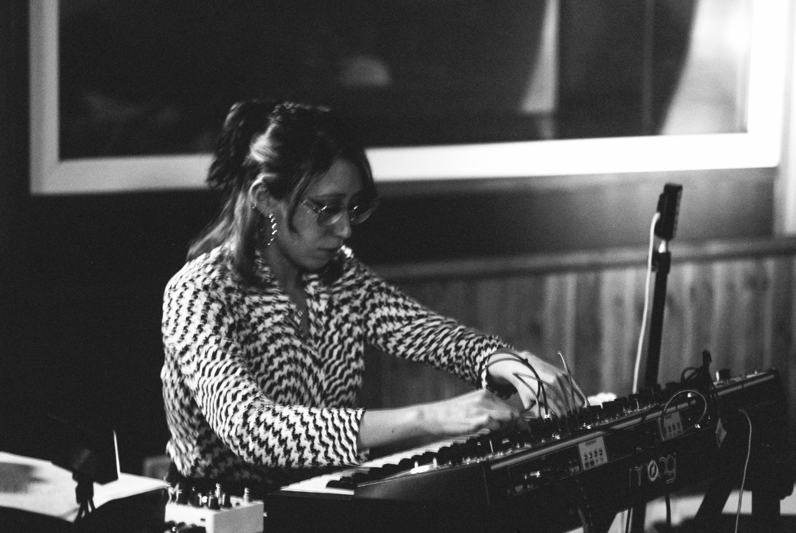
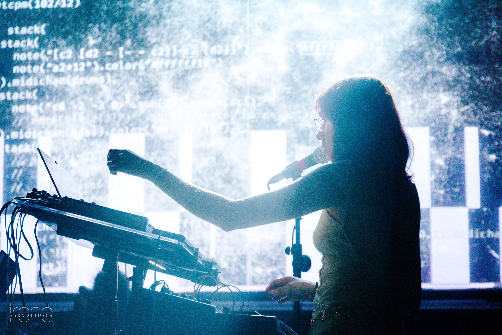
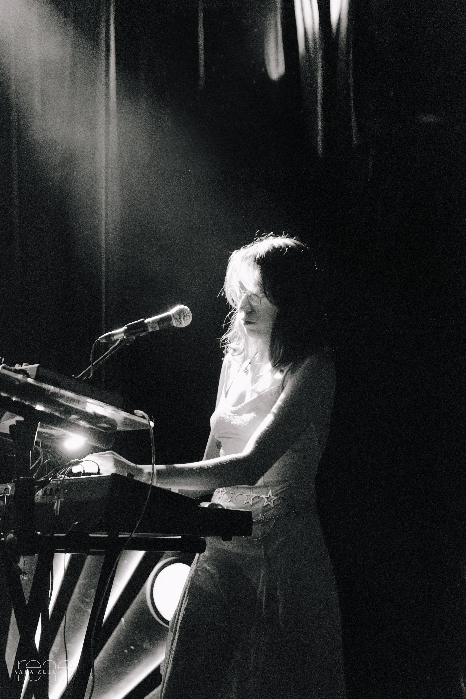
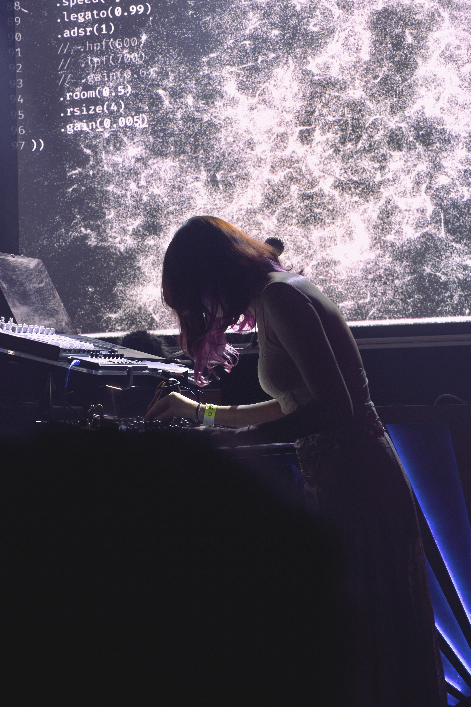

About

María Castro (Bogotá, 1998) is a Colombian electroacoustic composer and sound artist whose work explores the intersection of music, interactivity and technology. She holds a degree in Contemporary Composition from Universidad El Bosque (Colombia) and a Master's degree in Electroacoustic Composition and New Media from CSKG (Spain).
Her work has been presented at Sonido Futuro CBA (Spain, 2026), Ars Electronica Forum Wallis (Switzerland, 2025), Q-O2 Experimental Music and Sound Art (Belgium, 2024), Canal Connect (Spain, 2023), BAH Festival (Spain, 2024), MIGRATS – DANSA CCCC (Spain, 2025) and Festival Paralelo (Colombia, 2019–2021). In 2026, she was selected for an experimental electronic music residency at Matadero Madrid and L.E.V. Festival with Álvaro Cáceres.
Her practice integrates electroacoustic composition, soundscapes and sound design across a range of contexts — from electronic music, contemporary dance, digital art, interactive performance, post-digital lutherie and non-linear media. She uses digital tools and interactive paradigms to explore new forms of sonic expression in both physical and virtual environments, always grounded in the convergence of multiple disciplines where music, sound and interactivity act as bridges between the physical and digital worlds.
She works as Senior Audio Designer at No Brakes Games, leading the sound department on international video game projects. And in 2026, she was a jury member for the BAFTA Games Awards Game Audio category in London, UK.


